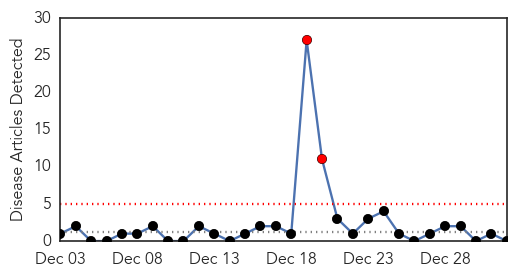
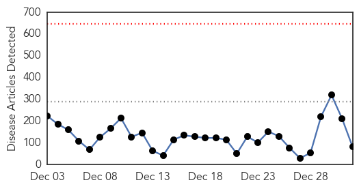
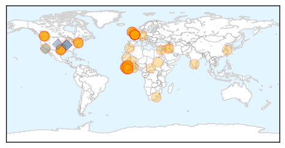
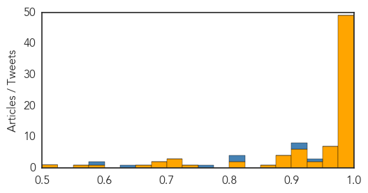

Meningitis
30-Day Web Trend
2 alerts, 0 warnings

30-Day Twitter Trend
0 alerts, 0 warnings

Article Locations

Article Confidences

Top Articles:
-
No articles found for Jan 01, 2015
Top Tweets:
-
No tweets found for Jan 01, 2015
Ebola
30-Day Web Trend
0 alerts, 0 warnings

30-Day Twitter Trend
0 alerts, 0 warnings

Article Locations
Article Confidences
Top Articles:
- 1.000
- WHO Updates Ebola Death Toll To 7,905, First Ebola Case In Scotland Undergoes Experimental Treatment
- 1.000
- Largest Ebola outbreak ever teaches lessons
- 1.000
- Largest Ebola outbreak ever reveals truths about the mysterious, deadly disease
- 1.000
- Most intense Ebola transmission in West Africa reported in western Sierra Leone ' UN
- 1.000
- Ebola still spreading; death toll rises to 7,905
- 1.000
- Patient Being Tested for Ebola in Kelowna
- 1.000
- Editorial: No time to let our guard down on Ebola
- 1.000
- Experts: It was a busy, black-eye year for disease control
- 1.000
- Final Ebola test negative
- 1.000
- Ebola spreads in Sierra Leone as global cases top 20,000 - WHO
- 1.000
- UPDATE 1-Ebola spreads in Sierra Leone as global cases top 20,000 - WHO
- 0.999
- Ebola spreads in Sierra Leone as global cases top 20,000
- 0.999
- Ebola crisis: British patient Pauline Cafferkey being treated with survivor's blood plasma
- 0.999
- WHO: W. Africa Ebola Death Toll Nears 8,000
- 0.999
- Ebola outbreak: New Year holiday brings respite for Liberia in fight against disease
- 0.999
- domain-b.com : Study points to bats as possible source of Ebola outbreak in West Africa
- 0.999
- Race to find passengers who flew to Britain with Ebola nurse
- 0.998
- Sierra Leone president calls for week of fasting, prayer
- 0.998
- Ebola Virus Outbreak 2015: 1.4 Million Infections Estimated; Mid-Year End Possible : Health : Latino Post
- 0.998
- Ebola in the UK: Infected nurse Pauline Cafferkey in 'critical' stage of treatment
- 0.998
- British nurse returns from Sierra Leone with Ebola virus
- 0.998
- UK Ebola patient asks for experimental treatment
- 0.998
- Sierra Leone's president calls for week of fasting, prayer over Ebola
- 0.997
- Second Ebola Test Negative for Nurse Being Treated in Kelowna
- 0.997
- Nurse is Britain’s first Ebola victim
- 0.996
- Mahama: Ghana’s Ebola escape is God’s handiwork
- 0.995
- Ebola victims hit 8,000 ? WHO -
- 0.995
- Ebola death toll nears 8,000 - WHO
- 0.994
- Passengers on flight with Scottish Ebola nurse have all been traced, say officials
- 0.994
- First Ebola victim may have been infected by bats
- 0.994
- Ebola: Nurse Pauline Cafferkey 'as well as hoped for'
- 0.994
- Islamic State militants have contracted Ebola, Iraqi media says
- 0.993
- Health-care worker leaves B.C. hospital after third negative Ebola test
- 0.993
- Ebola-hit UK nurse treated with survivor’s plasma, trial drug
- 0.993
- UPDATE 1-Healthcare worker in Scotland diagnosed with Ebola
- 0.992
- Ebola Curfew in Liberia Suspended for New Year's Celebration
- 0.989
- All passengers on flight with Ebola nurse ‘traced’
- 0.988
- Insect-eating bats, not fruit bats, now suspected in Ebola outbreak
- 0.987
- Ebola crisis: UK reports first case to WHO
- 0.986
- Toronto doctor who fought SARS working to stop Ebola virus in Liberia
- 0.986
- Ebola nurse Pauline Cafferkey monitored around the clock as condition ''could be changing minute-by-minute''
- 0.986
- Ebola-hit UK nurse treated with survivor’s plasma, trial drug
- 0.985
- Those touched by Ebola recount how their lives have changed;
- 0.982
- Alarming Threat
- 0.981
- Nurse Infected With Ebola Can Be Treated With Plasma From Survivors
- 0.980
- Bats Implicated as Source of West Africa Ebola Outbreak
- 0.977
- Italy doctor with Ebola has recovered: Media
- 0.976
- Ebola contact tracing underway in UK
- 0.976
- Ebola case confirmed on-board British Airways flight
- 0.967
- Fox 28: South Bend, Elkhart IN News, Weather, Sports
Showing top 50 articles...
Top Tweets:
- 0.992
- Lassa Fever another Virus Plaguing West Africa http://t.co/JGP4NNCkuv üíâüíäüî¨üè• Vaccine Ebola vaccines = goal for a HappyNewYears
- 0.992
- Lassa Fever another Virus Plaguing West Africa http://t.co/Hbshe1RzCs üíâüíäüî¨üè• Vaccine Ebola vaccines = goal for a HappyNewYear
- 0.987
- RT: [UNNEWS] Most intense Ebola transmission in West Africa reported in western Sierra Leone – UN http://t.co/W1QehqvyVl EBOLA…
- 0.957
- Lassa Fever another Virus Plaguing West Africa http://t.co/yn6TbGVLxd üíâüíäüî¨üè• Ebola Marbug & Lassa vaccines = goal for a HappyNewYear
- 0.946
- UN News - Most intense Ebola transmission in West Africa reported in western Sierra Leone - UN http://t.co/5RjwedgubZ
- 0.922
- RT: Sierra Leone MOH Ebola Update Jan 1: 18 New Conf. Cases & 10 Susp.; 26 New Conf. Deaths https://t.co/kezWS2qlzc
- 0.858
- UPDATE 1-Ebola spreads in Sierra Leone as global cases top 20,000 - WHO http://t.co/sLU7B4WnFI
- 0.823
- RT: Sierra Leone MOH Ebola Update Dec 31: 39 New Conf. Cases & 20 New Susp.; 25 New Conf. Deaths https://t.co/KnWGxXxgqu
- 0.759
- Malaria killing thousands more than Ebola in West Africa http://t.co/y8KqwRs92b
- 0.759
- Malaria killing thousands more than Ebola in West Africa http://t.co/y8KqwRs92b
- 0.730
- RT: Zero bats in a dead tree don't equal Ebola virus infection of a boy. Meliandou Guinea http://t.co/LgKzQlOZRD
- 0.603
- Nurse infected with Ebola is 'critical' stage of treatment http://t.co/Xyzk0KABKP
- 0.560
- RT: Experimental drug for British Ebola nurse who had been working in Sierra Leone http://t.co/n78vWcw7Ya http://t.co/S81ZBGlfDp
- 0.556
- RT: Iraq - Media reports of 4-5 ebola cases in Mosul continue - gov denies - WHO looking into situation https://t.co/sFjtxVV…
- 0.541
- Ebola has been devastating this year. Why the virus isn't the big threat.That’s still to come via http://t.co/dLf6jRk2TS